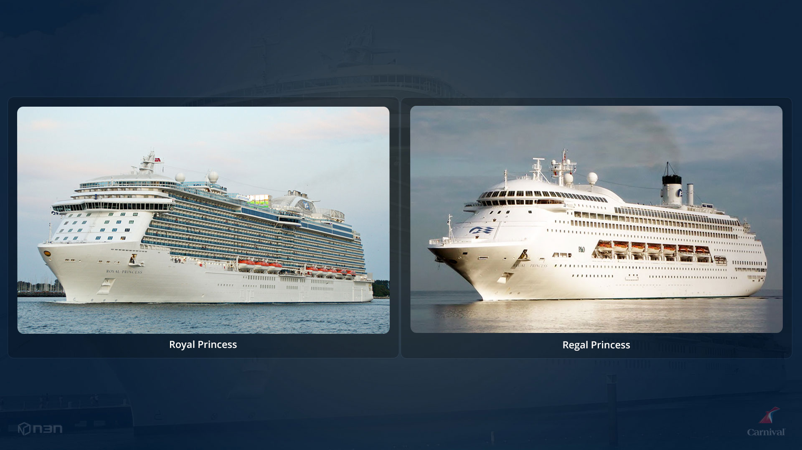
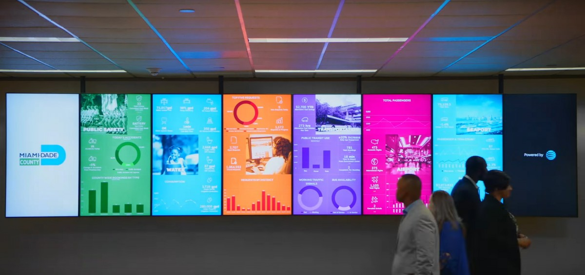
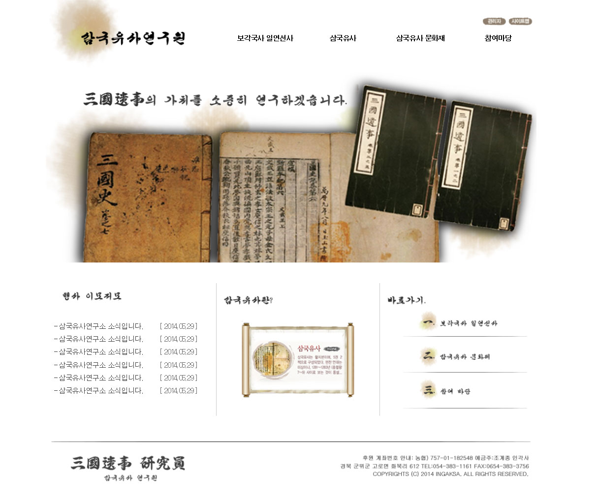
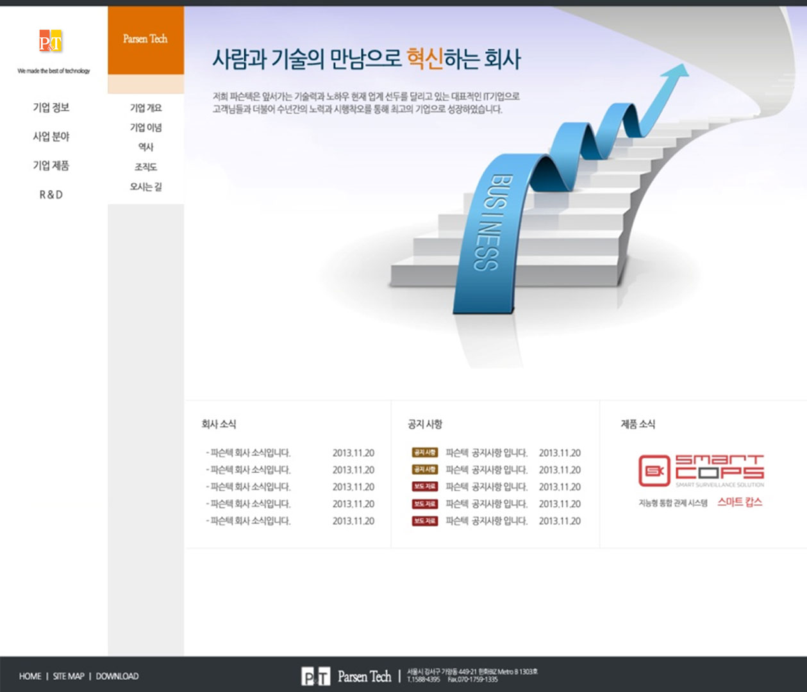
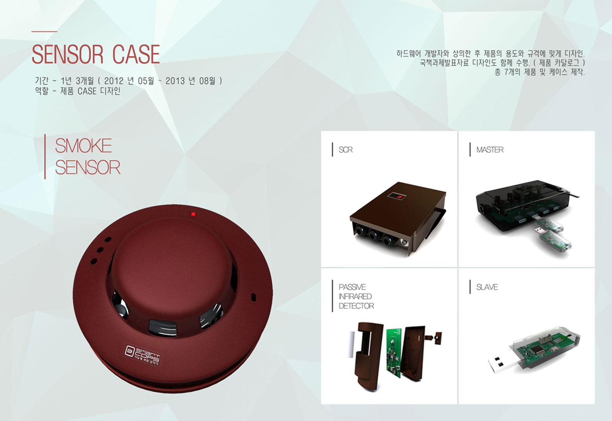

DAIA LAB
-
2019.01
-
2019.12UI/UX/기획/개발
ioTV

Text / Shape / Chart / Video 등... 다양한 Contents들을 화면에 올려 데이터를 연결하여 대시보드 및 관제가능
-
2019.01
-
2019.12UI/UX/기획/개발
PPT Plus

PPT디자인에 데이터를 연결하여 사용 / WEB 연동 / Cloud저장
-
2018.11
-
2019.04디자인/기획/개발
DAIALAB_Homepage

반응형 웹 / Vue / Vuetify / Webpack / nodejs 활용
-
2018.08
-
2018.11UI/UX/기획/개발
남동발전 신재생에너지

남동발전 신재생에너지 예측진단 통합 플렛폼
dailworks
-
2018.04
-
2018.06UI/ UX/ 기획
ThingPlus_EMS

전력관리시스템 기획 / 디자인
N3N
-
2017.03
-
2018.03UI/UX/기획/UI개발
Jackpot Project
프로젝트 개발
-
2017.02
-
2017.01UI/UX/기획
삼성반도체

삼성반도체 화성공장의 생산지원라인의 현황과 문제점을 발견 할 수 있는 시스템 기획
-
2017.02
-
2017.01UI/UX/기획
AP Mall 선진화

DB관리와 AP Mall의 현황을 한눈에 볼 수 있는 UI/UX/기획
-
2017.01
-
2016.12UI/UX/기획
JFE

일본 제철/제강회사인 JFE에서 생산되는 제품의 품질을 확인하고 공정과정 / 제품의 Data를 관리하는 시스템 기획 & 디자인
-
2016.12
-
2016.11UI/UX/UI개발
IOT Tech Show

N3N에서 주최하는 IOT TechShow의 이벤트 행사에 필요한 화면디자인
-
2017.01
-
2016.10UI/UX/UI개발
INNOWATCH 4.0

기존의 INNOWATCH의 White버전을 요구받아 새롭게 디자인 / WPF코딩 작업을 통해 UI 디자인
-
2016.11
-
2016.10UI
RDS 400

RDS 엔지니어가 쓰기 편하게 카테고리별 항목정리를 통해 Setting UI디자인 작업
-
2016.07
-
2016.06UI 컨텐츠 디자인
스마트 가로등

가로등에서 얻어지는 정보들을 쉽게 인식 할 수 있게 디자인
-
2016.07
-
2016.04UI/UX/UI개발
현대모비스

영업팀의 기획의도와 요구조건을 충실히 반영한 프로젝트
-
2016.07
-
2016.05UI/UX
ADP Collector

프로그래머가 쓰기 편한 UI/UX를 구현 (프로그래머 의견 반영)
-
2016.12
-
2016.04UI/UX/기획/UI개발
WIZEYE

WIZEYE 1.7ver 웹 버전 UI/UX/기획을 맡아서 진행
-
2016.04
-
2016.05UI 컨텐츠 디자인
Carnical Cruise / 미국
기획자의 의도반영 / GUI 디자인
-
2016.07
-
2016.04UI 컨텐츠 디자인
at&t 스마트시티 / 미국
기획자의 의도반영 / 대쉬보드 메트로 디자인
파슨텍
-
2016.01
-
2015.06UI/UX
Radar Analyzer

데이터를 효과적으로 분석할 수 있는 도킹패널 기획 / UI/UX 설계
-
2015.08
-
2015.03기획/제안
미얀마 모니터링 시스템

동부 해외사업팀과 협업스토리 / 보드 구성을 통해 보다 타당성 있는 제안서 구성 / 템플릿 디자인 및 전반적인 내용을 설득력 있게 재구성
-
2015.06
-
2014.11UI/UX
SMART COPS 리뉴얼

기존의 사용자들의 불편사항을 기초로 한 사용자 중심의 UX설계 / 필요에 따른 화면들과 기능 추가를 통해 좀 더 분석적인 UI 디자인 구현
-
2015.01
-
2014.10UI/UX/기획/제안서
주행분석프로그램

로봇청소기의 움직임을 분석한 결과를 쉽게 볼 수 있게 레이아웃 구성 / 기획 & 디자인
-
2014.10
-
2014.08UI/UX/UI개발
삼국유사연구원 홈페이지
삼국유사에 걸 맞는 고서 느낌의 컨셉을 사용 / 디자인 & UI개발
-
2014.05
-
2014.03기획/UI개발
A&D 사내 웹페이지 개선사업
사내 업무에 맞는 화면 제작 / 사내 웹서비스를 개선 / UI개발
-
2014.03
-
2014.01UI/UX/UI개발
주차정산기통합관리시스템

코레일주차정산기 Web / 모바일 / 키오스크 화면 기획 & 디자인 & UI개발
-
2014.01
-
2013.10UI/UX/기획/UI개발
파슨텍 홈페이지 제작
반응형 웹 구현 / 제품 및 회사 소개 페이지 리뉴얼 기획
-
2013.05
-
2013.083D/카달로그 디자인
제품 디자인 / 국책과제수행
7개의 센서 case디자인 및 카달로그 작성
-
2015.08
-
2012.01파슨텍 입사
전통사찰 방재예측시스템 조감도 제작

스마트캅스 관제 시스템에 시각적인 효과 및 정확한 위치정보를 전달하기 위해 사찰 조감도 도입
홍익조형디자인
-
2011.08
-
2011.033D 디자인
민들레

민들레 꽃을 컨셉으로 낮에는 빛을 담고 밤엔 조명을 통해 상징적 조형물로 거듭남 / 안양 쇼핑몰 설치
-
2011.03
-
2011.013D 디자인
SKY

거울의 반사를 이용한 조형물에 세상과 하늘을 담는 컨셉 / 청담동 자이 아파트 설치
-
2011.01
-
2010.103D 디자인
천년의 나무

인간과 자연의 조화로움을 컨셉으로 한 작품 / 부산연지동 자이 아파트벽면에 설치
-
2011.08
-
2004.03졸업 설계
This is not an apple

모순이란 주제로 공간 디자인.